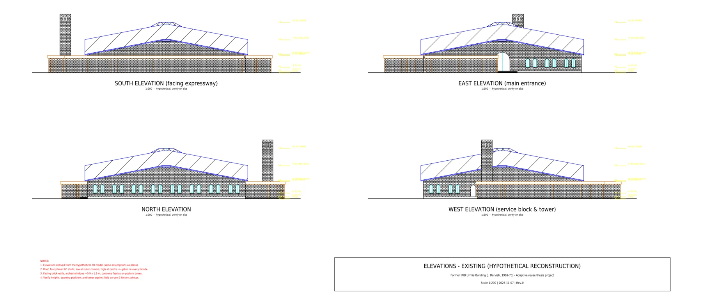
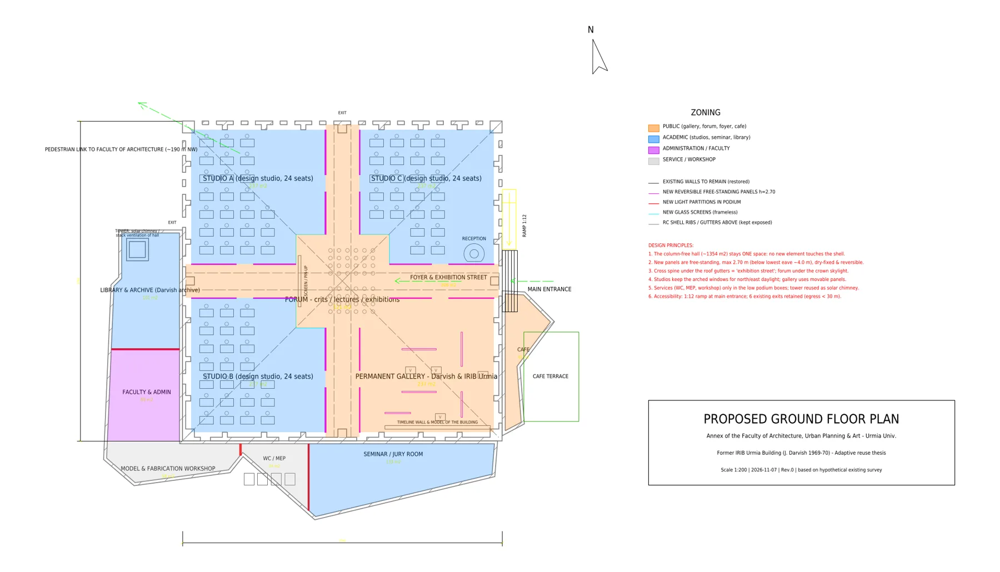
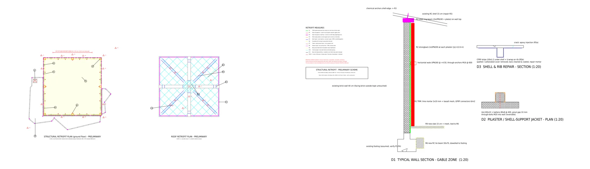

The former IRIB building, Urmia
A building by Jahangir Darvish (1969–70) with a hall of about 1,350 m² and not a single column, empty for years. This study asks how it could come back to life.
1. The building
The former radio and television building of Urmia, next to the Khatam al-Anbiya expressway and Lotfi Street, is made of four square volumes with pitched roofs arranged around a cross-shaped gap on a stepped podium. Its footprint is about 2,000 m², and a circular drive about 95 m across sits in front of it.
Its key feature is the main hall: about 37 × 37 m, covered by four reinforced-concrete shells about 15 cm thick, which carry loads through diagonal ribs and cross-shaped gutters to the brick piers. A crown skylight, about 12 m high, lights the centre of the hall.

2. Damage
From published images, the main problems are: water ingress through the worn roof and spalling concrete under the shells and gutters, traces of soot and fire on walls and ceiling, and hanging suspended ceilings. A final judgement on each is only possible after a visit and testing.
3. What new use?
A museum use has been announced for the building. This study compares three options against seven criteria and proposes another: an annex campus for the Faculty of Architecture, Urban Planning and Art of Urmia University, only about 190 m away. The city's museum cluster is about 5.3 km away, on the city-centre tourist route.
| Option | Weighted score (out of 100) |
|---|---|
| University campus + public gallery | 92 |
| Offices | 59 |
| Museum | 53 |
The museum element is not lost: a permanent gallery on the history of the building, the work of Jahangir Darvish and the history of radio and television in Urmia stays open to the public.

4. Design proposal
The core idea is that the column-free hall stays one space. No new element touches the concrete shell; spaces are defined by free-standing, reversible panels 2.70 m high, so the roof can be seen from anywhere in the hall.
- The cross-shaped axes under the gutters become an "exhibition street", and the centre of the hall, under the skylight, a forum for juries and lectures.
- The four quadrants: three design studios and one permanent gallery.
- Services only in the low perimeter volumes; the brick tower becomes a solar chimney for natural ventilation.
- Total usable area about 1,735 m²: 55% teaching, 35% public.


5. Seismic retrofit
Principles: minimum intervention, material compatibility, reversibility, and keeping the face brick and the concrete shell that define the building. A preliminary assessment shows the main weakness is the out-of-plane stability of the tall, slender brick walls.
- Vertical steel braces behind the walls and a continuous ring beam at the top of the walls, which also ties the shell to the walls.
- Shear strengthening of walls with a lime-mortar TRM overlay instead of a thick concrete jacket.
- Assessment of the concrete shell with cores and corrosion tests; carbon-fibre strengthening if needed.
Basis: Iranian guidelines for the seismic rehabilitation of existing buildings (Publication 360) and of unreinforced masonry buildings (Publication 376). Final design would follow a detailed survey, material testing and nonlinear analysis, using the spectrum of the 5th edition of Standard 2800.

Download the existing-condition drawings
The existing-condition drawings of this building (site plan, ground floor and roof plans, section and elevations) are available as a PDF for students and anyone interested.
Download PDF (A3, 3 sheets) Request the AutoCAD files
AutoCAD files are shared only for academic work, on direct request.
Do you have memories or photos of this building?
If you worked in this building or have old photos of it, we would love to hear from you. With your permission and credit, they will be added to the case study gallery.